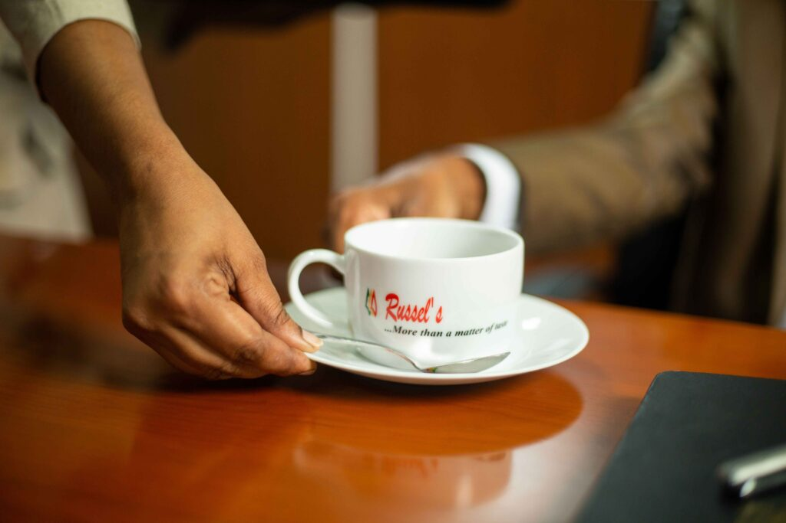

Russel Perera
His journey in tea began in 1988, providing a tea service to a reputed bank. With 35 years in the industry, his vision transformed a single tea service into a renowned group of companies.
Home / About
Russel's legacy
Over 35 years of excellence in tea — built on quality, innovation, and the perfect cup.
Since 1988
It began in 1988 with humble beginnings — a tea service for a reputed bank. That first venture became the pioneering tea service in Sri Lanka, and the foundation of the Russel's Group of Companies.

For over 35 years, Russel's has been at the forefront of delivering premium quality teas, blending exceptional craftsmanship with an unwavering commitment to excellence. Founded by the visionary Russel Perera, our brand stands as a testament to a rich legacy built on quality, innovation, and a dedication to enriching lives through the perfect cup of tea.
Russel's dedication to quality extends beyond the tea itself, starting with thoughtfully designed packaging that tantalizes the senses even before the first steep. Every blend is a celebration of sustainability and wellness, crafted to bring a moment of pure bliss to our customers.
As Russel's continues to evolve, we remain committed to introducing new tea blends that meet the diverse needs of our global clientele.
Our vision
To become the world's leading wellness brand, delivering unparalleled experiences through premium quality products that enrich the mind, body, and soul.
Our mission
Russel's Wellness exists to enhance everyday wellbeing while prioritizing people and the planet over short-term profit — delivering sustainable, science-backed wellness products through ethical sourcing, environmentally friendly packaging, and respectful partnerships with herbal suppliers and Sri Lanka's Indigenous communities, with reinvestment in community uplift embedded across our products, services, and operations.
Exquisite flavor, sourced from Sri Lanka's lush hillsides, steeped in tradition and quality.
Antioxidant-rich, promoting heart health, mental clarity, and overall well-being with every sip.
Crafted with care, from leaf to cup, preserving the essence of nature's bounty.
where every cup isquality & tradition.
Minds behind
His journey in tea began in 1988, providing a tea service to a reputed bank. With 35 years in the industry, his vision transformed a single tea service into a renowned group of companies.
An innovator and strategist with a BSc in Business Management, an MBA in Marketing and 11 years of corporate experience — and a certified tea taster with a Diploma in Tea Tasting & Technology.
Holds a BSc in Business Management from the University of Wales and is pursuing an MBA, bringing 12 years of corporate experience to Russel's day-to-day operations.